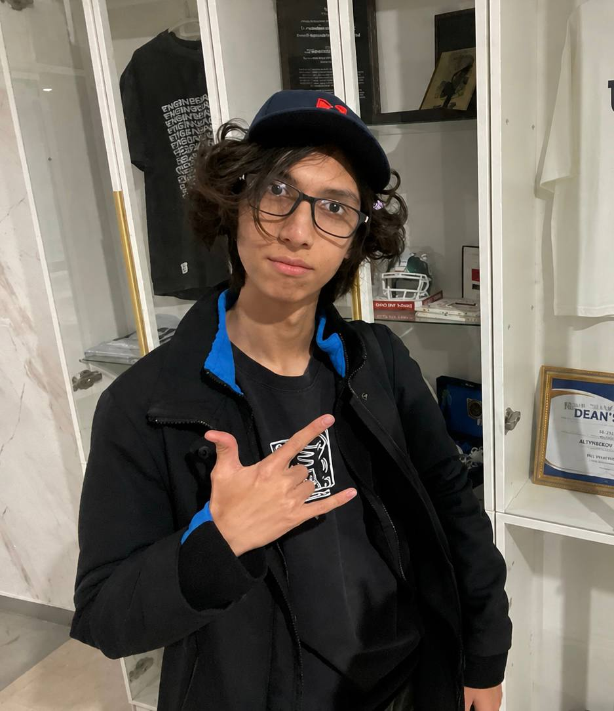

Hello, I am
Satimov Damir
React • Django • React Native • Flutter

Who am I?
I am a Software Engineering student (SE-2525) who is interested in frontend development, modern interfaces and the way digital products are built from an idea into something people can use.
My main focus is web development, but I also enjoy exploring mobile development and backend technologies. I like learning by building real projects instead of only studying theory.
Right now I am working on improving my development skills, learning new technologies and becoming more comfortable with building complete applications.
My Skills
- Frontend Development
- Mobile Development
- Backend Development
- UI and UX
My Journey
- Started my IT journey at IT Step Academy at the age of 9, where I built programmable LEGO vehicles such as trains, trams and tractors, and even assembled my first real computer
- Started learning programming more seriously and explored both C++ and C#, building a strong foundation in programming basics.
- Used C++ to create games and interactive projects with tools such as Construct 2, which helped me understand how programming could be used to create something visual and interactive
- Used C# to build web applications and APIs while also learning the fundamentals of the language and understanding how backend systems work
- Since then, I have been continuously exploring the IT field, learning new technologies and going deeper into everything that genuinely interests me
What I am working towards
My goal is to become a developer who can do more than simply write code. I want to understand how products work, how interfaces affect users and how different technologies connect together into one reliable system.